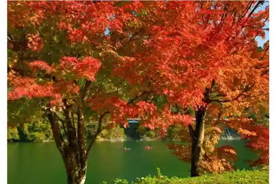
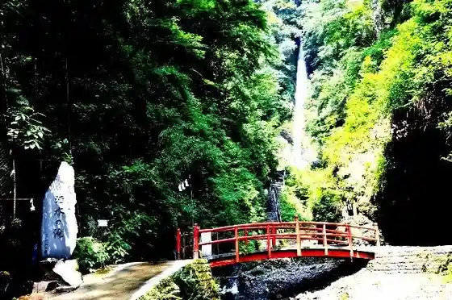
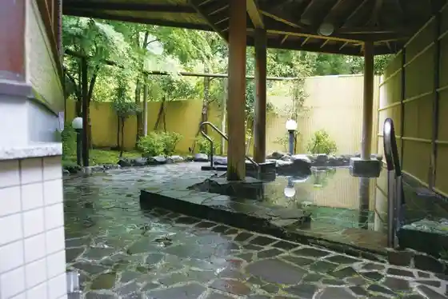
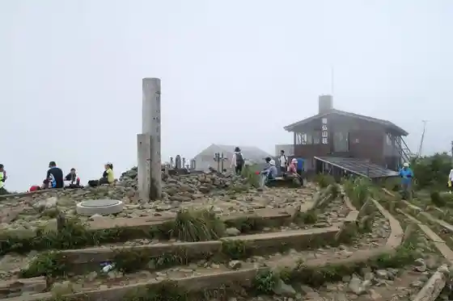

Tansawako
Yamakita, Kanagawa · Official / source link

Shusui Falls
Yamakita, Kanagawa · 0465-75-2717 · Official / source link

Yamakita Ritsu Nakagawa Onsen Buna Baths
Yamakita, Kanagawa · 0465-75-3646 · Official / source link

to no Gaku
Yamakita, Kanagawa · Official / source link

Roadside Station Yamakita
Yamakita, Kanagawa · 0465-77-2882 · Official / source link
Yamakita Tetsudo Park
Yamakita, Kanagawa · 0465-75-2717 · Official / source link
Miho Dam
Yamakita, Kanagawa · Official / source link
Tansawako Shuhen
Yamakita, Kanagawa · Official / source link
Kawa Village Castle Ruins (Kawa Village Joshi Rekishi Park)
Yamakita, Kanagawa · Official / source link
Tansawako Aze Chiyo no Sawa Enchi Lookout
Yamakita, Kanagawa · Official / source link
Kawanishi Ya Shuzo Mise
Yamakita, Kanagawa · 0465-75-0009 · Official / source link
Nishitanzawa Nakagawa Onsen Gyosan Tei Yamabuki
Yamakita, Kanagawa · 0465-78-3911 · Official / source link
Yamakita Kenko Fukushi Center Sakura Baths
Yamakita, Kanagawa · 0465-75-0819 · Official / source link
Tansawako Memorial Museum Miho no Ie
Yamakita, Kanagawa · 0465-78-3415 · Official / source link
Garasu Workshop (Ryu Gen)
Yamakita, Kanagawa · 0465-20-3636 · Official / source link
Ono Yama
Yamakita, Kanagawa · 0465-75-3646 · Official / source link
Hidamari Village
Yamakita, Kanagawa · 0465-77-2777 · Official / source link
Yamakita Ritsu Kyowa no Mori Center
Yamakita, Kanagawa · 0465-20-3759 · Official / source link
Yoritomo Sakura (O Hanami)
Yamakita, Kanagawa · 0465-75-3649 · Official / source link
Serapiirodo (Shinrin Serapii)
Yamakita, Kanagawa · Official / source link
Hinoki Hora Maru
Yamakita, Kanagawa · 042-769-8236 · Official / source link
So Sugi
Yamakita, Kanagawa · Official / source link
Kumazasa no Mine
Yamakita, Kanagawa · 042-769-8236 · Official / source link
Entsu Tera
Yamakita, Kanagawa · 0465-77-2738 · Official / source link
Yamakita Kenko Fukushi Center Tomobishi Shoppu Sakura
Yamakita, Kanagawa · 0465-75-1295 · Official / source link